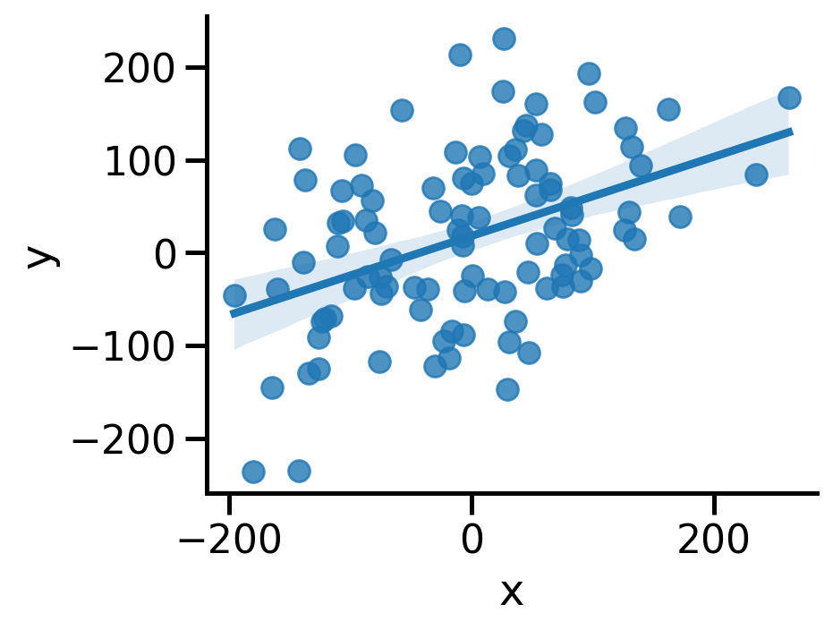

| count | mean | std | min | 25% | 50% | 75% | max | |
|---|---|---|---|---|---|---|---|---|
| dataset | ||||||||
| I | 11.0 | 9.0 | 3.316625 | 4.0 | 6.5 | 9.0 | 11.5 | 14.0 |
| II | 11.0 | 9.0 | 3.316625 | 4.0 | 6.5 | 9.0 | 11.5 | 14.0 |
| III | 11.0 | 9.0 | 3.316625 | 4.0 | 6.5 | 9.0 | 11.5 | 14.0 |
| IV | 11.0 | 9.0 | 3.316625 | 8.0 | 8.0 | 8.0 | 8.0 | 19.0 |
Análise de dados
Análise de Correlação
Prof. Marcus Carvalho @ DCX / CCAE / UFPB
Relação entre variáveis
- Em análise exploratória, é útil examinar se há associação entre duas variáveis numéricas
- Características importantes para essa associação:
- Formato: linear, exponencial, parabólica, linear e depois assintótica, outro formato arbitrário, etc.
- Força: correlação forte, fraca, nenhuma
- Sinal: correlação positiva ou negativa, quando é perceptível
- Pontos extremos fora da associação
- Já vimos como visualizar a covariância com gráficos de dispersão
- Outra técnica para relacionar variáveis é a análise de correlação
Correlação
- Medida que indica se a relação entre 2 variáveis \(x\) e \(y\) é estatisticamente significativa
- O coeficiente de correlação é uma estatística que mede em que grau \(y\) é uma função de \(x\) e vice versa
- O coeficiente de Pearson é o mais popular e usado principalmente para relações lineares
- Os coeficientes de Spearman e Kendall são baseados em ranking
- São menos sensíveis a outliers e capturam algumas relações não lineares
Coeficiente de Correlação de Pearson
- Indica a força e a direção da correlação linear entre duas variáveis
- Seu coeficiente amostral para as variáveis x e y é definido por:
\[r_{xy} = \frac{1}{n-1} \sum_{i=1}^{n} \left( \frac{x_i - \bar{x}}{s_x} \right) \left( \frac{y_i - \bar{y}}{s_y} \right)\]
- O valor do coeficiente de correlação \(r_{xy}\) varia de -1 a 1:
- Se \(r_{xy}\) é positivo: quando \(x\) aumenta, \(y\) aumenta linearmente
- Se \(r_{xy}\) é negativo: quando \(x\) aumenta, \(y\) diminui linearmente
- Se \(r_{xy}\) é aproximadamente 0: não há relação linear entre \(x\) e \(y\)
Coeficiente de Correlação de Pearson
- Valores tipicamente usados para indicar a força da correlação:
- Se \(r_{xy} \gt 0.7\) ou \(r_{xy} \lt -0.7\): correlação forte
- Se \(0.3 \lt r_{xy} \lt 0.7\) ou \(-0.7 \lt r_{xy} \lt - 0.3\): correlação moderada
- Se \(-0.3 \lt r_{xy} \lt 0.3\): correlação fraca
- Se \(r_{xy} \approx 0\): não há correlação (ou não se pode concluir nada)
- Porém, a avaliação da correlação vai depender de cada contexto
- Não há um número apenas que possa lhe responder tudo sobre a associação entre as duas variáveis
- A correlação servirá para complementar e quantificar observações feitas em gráficos de dispersão
Exemplo: quarteto de Anscombe
- Quatro datasets com pares de variáveis \(x\) e \(y\)
- Nota-se estatísticas bem similares em cada dataset…
Exemplo: quarteto de Anscombe
- Calculando a correlação linear entre \(x\) e \(y\) em cada dataset:
- Todos os datasets são iguais? E se olharmos os dados?
Exemplo: quarteto de Anscombe
- Relações diferentes, mesma quantificação
- No 2o grupo não há uma relação linear
- No 3o há relação perfeita entre maioria das observações, com uma exceção
- No 4o não há relação; há uma exceção que faz parecer que há uma relação
Outros coeficientes de correlação
- Coeficientes de Spearman e Kendall são baseados em ranking
- Menos sensíveis a outliers e capturam algumas relações não lineares
pd.DataFrame({
'pearson': anscombe.groupby(['dataset']).corr(method='pearson').y.xs('x', level=1),
'spearman': anscombe.groupby(['dataset']).corr(method='spearman').y.xs('x', level=1),
'kendall': anscombe.groupby(['dataset']).corr(method='kendall').y.xs('x', level=1)
})| pearson | spearman | kendall | |
|---|---|---|---|
| dataset | |||
| I | 0.816421 | 0.818182 | 0.636364 |
| II | 0.816237 | 0.690909 | 0.563636 |
| III | 0.816287 | 0.990909 | 0.963636 |
| IV | 0.816521 | 0.500000 | 0.426401 |
Força e direção da correlação
- Exemplos de relação entre o valor esperado do coeficiente (linear) e vários tipos de associação entre duas variáveis:

Fonte: wikipedia
Exemplo: dados com relação linear
# Com o dobro do erro / ruído
# Dados mais espalhados, correlação diminui
ruido2 = 80 * rng.normal(size=100)
y = 0.5 * x + ruido2 + 20
df = pd.DataFrame({'x': x, 'y': y})
sns.lmplot(x='x', y='y', data=df, height=4, aspect=1.3)
print(f"Correlação: {df.x.corr(df.y)}")Correlação: 0.4340703264617881
Exemplo: dados com relação não linear
Exemplo: dados com relação não linear
- Visualizando os mesmos dados em escala logarítmica

Correlação vs. Causalidade
- ATENÇÃO! Correlação não implica causalidade!
- Ex: a quantidade de remédios consumidos tem forte correlação com a quantidade de pessoas doentes; mas o remédio não causa a doença

Fonte: XKCD
Cuidado com sumários: datasaurus
# Correlação
datasaurus = pd.read_csv(DATASAURUS_CSV)
datasaurus.groupby(['dataset']).corr().y.xs('x', level=1).to_frame()| y | |
|---|---|
| dataset | |
| away | -0.064128 |
| bullseye | -0.068586 |
| circle | -0.068343 |
| dino | -0.064472 |
| dots | -0.060341 |
| h_lines | -0.061715 |
| high_lines | -0.068504 |
| slant_down | -0.068980 |
| slant_up | -0.068609 |
| star | -0.062961 |
| v_lines | -0.069446 |
| wide_lines | -0.066575 |
| x_shape | -0.065583 |
| x | y | |||
|---|---|---|---|---|
| mean | std | mean | std | |
| dataset | ||||
| away | 54.266100 | 16.769825 | 47.834721 | 26.939743 |
| bullseye | 54.268730 | 16.769239 | 47.830823 | 26.935727 |
| circle | 54.267320 | 16.760013 | 47.837717 | 26.930036 |
| dino | 54.263273 | 16.765142 | 47.832253 | 26.935403 |
| dots | 54.260303 | 16.767735 | 47.839829 | 26.930192 |
| h_lines | 54.261442 | 16.765898 | 47.830252 | 26.939876 |
| high_lines | 54.268805 | 16.766704 | 47.835450 | 26.939998 |
| slant_down | 54.267849 | 16.766759 | 47.835896 | 26.936105 |
| slant_up | 54.265882 | 16.768853 | 47.831496 | 26.938608 |
| star | 54.267341 | 16.768959 | 47.839545 | 26.930275 |
| v_lines | 54.269927 | 16.769959 | 47.836988 | 26.937684 |
| wide_lines | 54.266916 | 16.770000 | 47.831602 | 26.937902 |
| x_shape | 54.260150 | 16.769958 | 47.839717 | 26.930002 |
Cuidado com sumários: datasaurus
- Muito parecidos?
Cuidado com sumários: datasaurus
g = sns.FacetGrid(datasaurus, col="dataset", col_wrap=5, height=2, hue="dataset")
ax = g.map_dataframe(sns.scatterplot, x="x", y="y", linewidth=0)